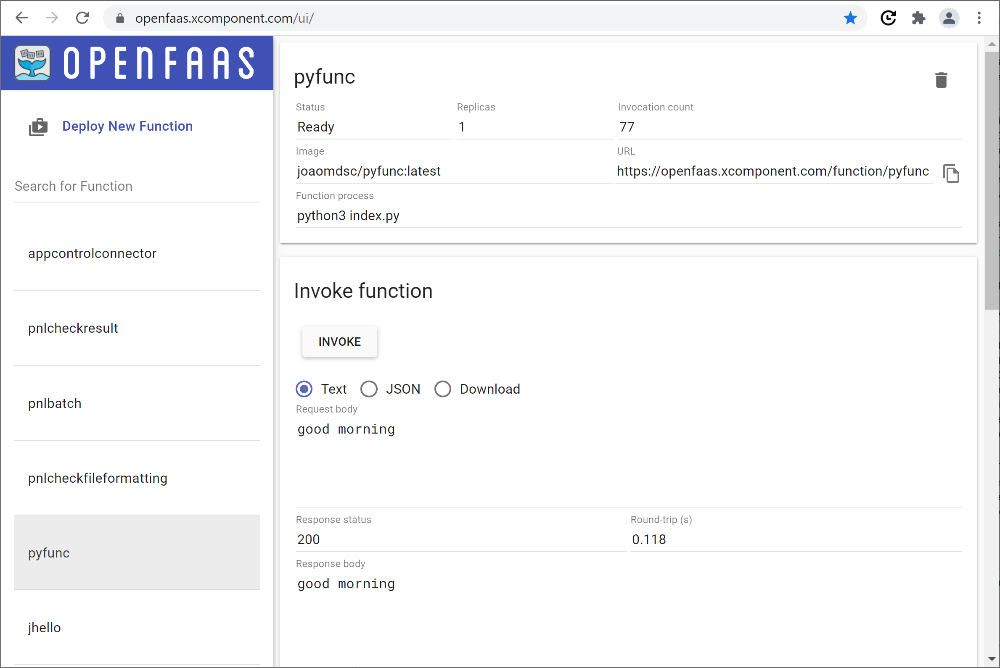
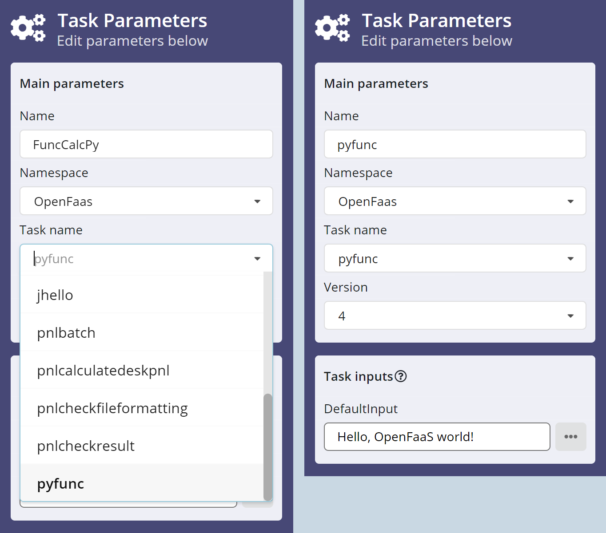
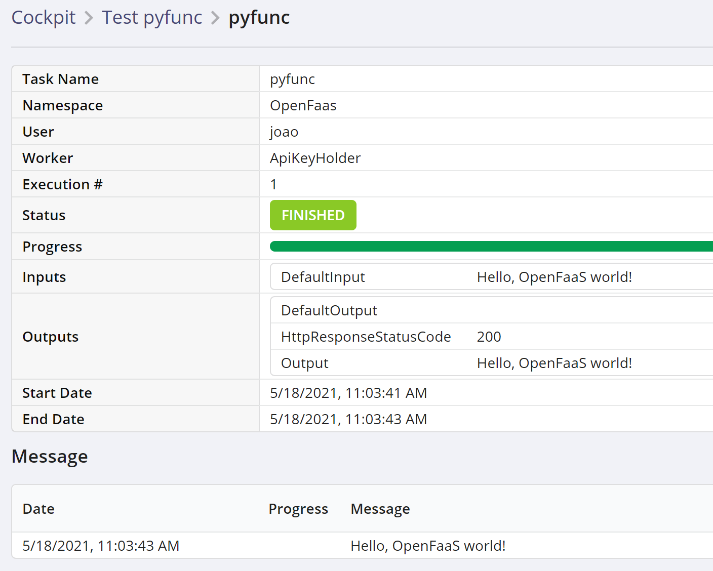
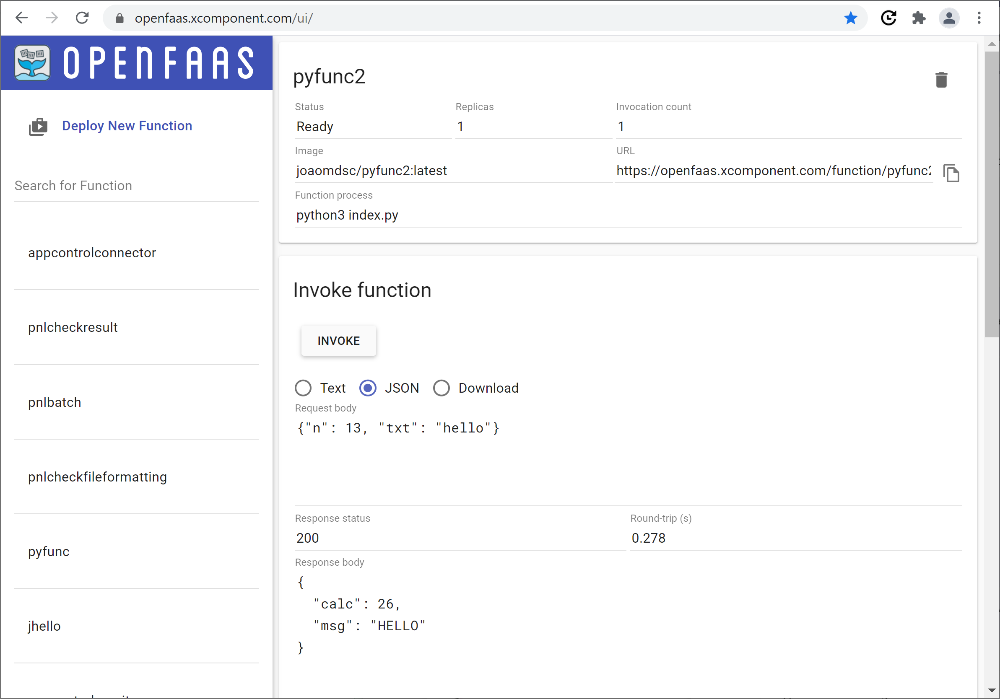
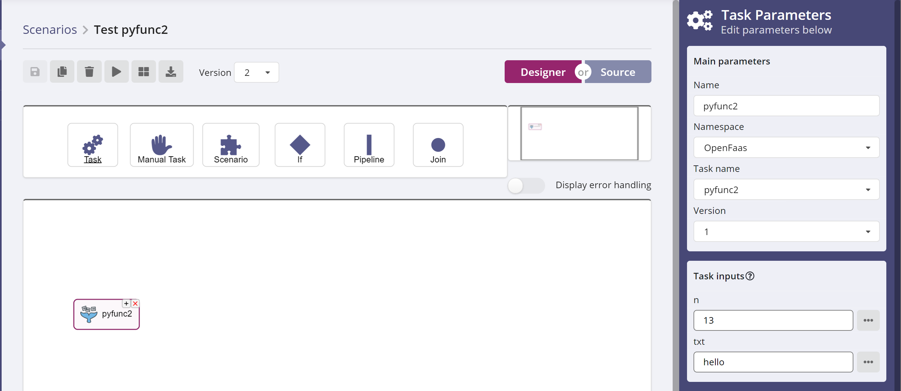
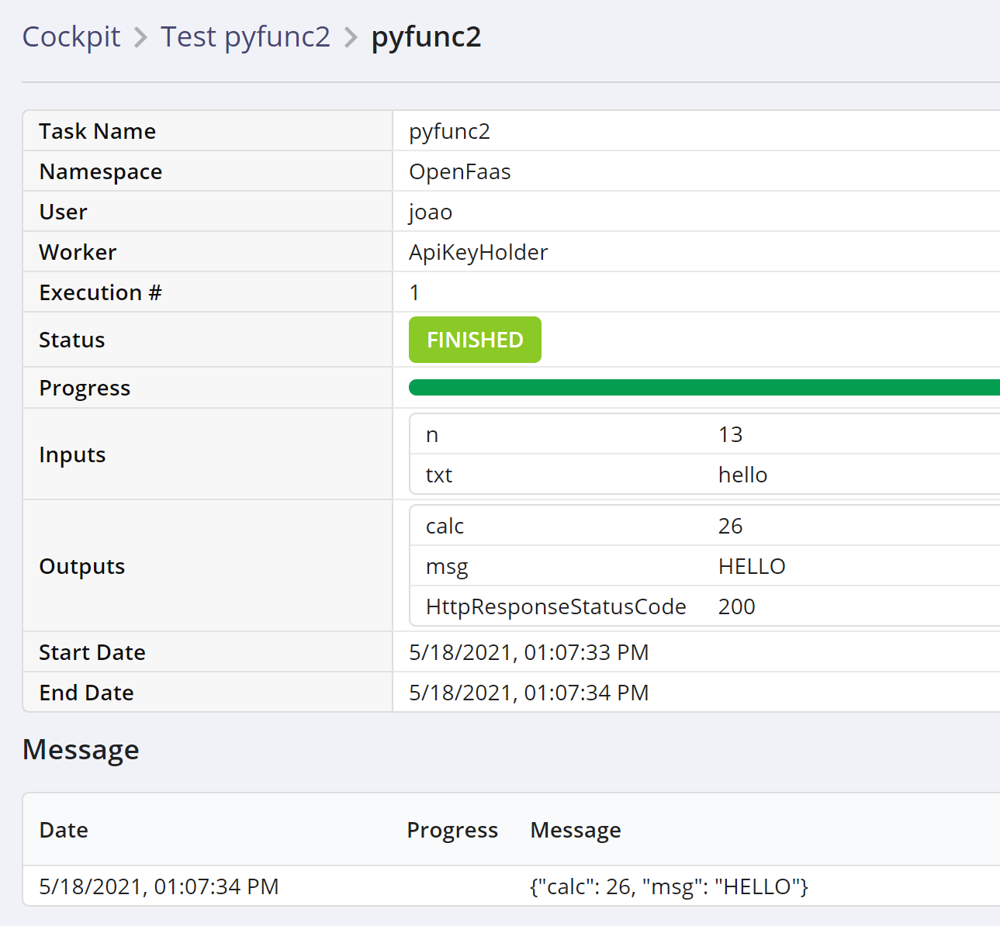

Contents
This document describes how to write a simple, synchronous python function that is run inside OpenFaas, and that can be invoked from XC Scenario to implement a scenario task. It details the integration with OpenFaas and the mechanics of making your function available on the server. A separate document will address the case of an asynchronous function.
Note that OpenFaas supports writing functions in many programming languages other than python, please have a look at the official OpenFaas documentation for more information.
Part of this document is based on the OpenFaas First Python Function tutorial.
OpenFaas and CLI Installation
This document assumes that you have a working OpenFaas installation, and you
will need to provide the URL for it. Contact an administrator if you don't have
this information. In our example, we'll be using
https://openfaas.xcomponent.com as the url for our OpenFaas server, or
gateway.
As part of the OpenFaas installation, the faas-cli executable should be in
your path. This is OpenFaas' command-line interface (CLI), and it is required
to perform a number of tasks, including building and deploying your functions,
so a set of valid credentials must be configured for it. Again, if needed,
contact the administrator responsible for your OpenFaas installation.
Write a simple function
Initialize the work environment
Create a working directory and move into it. Now scaffold a new Python function using the CLI:
faas-cli new --lang python3 pyfunc
This retrieves a set of templates from GitHub, if needed, then creates the following files:
pyfunc/handler.py
pyfunc/requirements.txt
pyfunc.yml
Again, this example uses python. Have a look at this page to see what other languages are available.
Note that for a single language, many templates may be available. The default for python is to use the Classic Watchdog, but the above link lists many others.
pyfunc.yml
This yaml file specifies your functions, and the OpenFaas gateway to use. The
faas-cli new command has already filled in most of this file:
version: 1.0
provider:
name: openfaas
gateway: http://127.0.0.1:8080
functions:
pyfunc:
lang: python3
handler: ./pyfunc
image: pyfunc:latest
You only need to change or specify the following items:
- the gateway, i.e. the url of your OpenFaas installation
- the docker image name
- the
com.xcomponent.labelproperty (to be added)
OpenFaas supports running functions from Docker images stored on Docker Hub or
in private Docker registries. If you decide to use Docker Hub, as we do in this
example, you'll need to include a Docker Hub account as the prefix in the
image name (joaomdsc in this case, see below).
If you want to use a private registry for your images, this document has information on how to specify the access credentials.
XC Scenario defines a label (Demo in our example) that is used to filter the
functions that will be made available. That label must be referenced here so
that your function can be used in XC Scenario. We'll use the
labels.com.xcomponent.label property to specify a value, which has to match
whatever value was configured in your installation of XC Scenario. Please
contact your X4B/Scenario administrator to find out the right label to use
here.
After applying these changes, here's what the modified pyfunc.yml file looks
like:
version: 1.0
provider:
name: openfaas
gateway: https://openfaas.xcomponent.com
functions:
pyfunc:
lang: python3
handler: ./pyfunc
image: joaomdsc/pyfunc:latest
labels:
com.xcomponent.label: Demo
handler.py
The handler.py file is where the function code will be implemented. It starts
out with an almost empty function skeleton:
def handle(req):
"""handle a request to the function
Args:
req (str): request body
"""
return req
The function has a single parameter req that will contain the body of the
HTTP request through which the function was invoked. The default implementation
in the provided template simply returns this string unchanged.
For the time being, we'll keep the function as it is, while we go through the process of making the function available and running it from XC Scenario. Later on, we'll see how to declare input and output parameters to communicate with a running scenario instance, when the function is used to implement a scenario task.
Build the function
Run the following command to build the function:
joao@debian1:~$ faas-cli build -f pyfunc.yml
Note: OpenFaas builds a docker image for the function, so make sure that
docker is deployed on the machine.
On successful completion, you should see the following message:
Successfully tagged joaomdsc/pyfunc:latest
Image: joaomdsc/pyfunc:latest built.
You can check the presence of the docker image:
docker images
REPOSITORY TAG IMAGE ID CREATED SIZE
joaomdsc/pyfunc latest e7f810f4455f 23 minutes ago 62.1MB
Now push the image to DockerHub:
joao@debian1:~$ docker push joaomdsc/pyfunc:latest
Deploy the function to the OpenFaas server
You can now deploy the function to the OpenFaas server, using the following command:
joao@debian1:~$ faas-cli deploy -f pyfunc.yml
Deploying: pyfunc.
Deployed. 202 Accepted.
URL: https://openfaas.xcomponent.com/function/pyfunc.openfaas-fn
Check for the presence of a 202 return code. Also note that it might take a minute or two for your function to be available.
Test the function
You can invoke the function through curl, passing in a request body with the
-d argument:
joao@debian1:~$ curl https://openfaas.xcomponent.com/function/pyfunc -d "Hello!"
Hello!
joao@debian1:~$
The text that was passed in is returned by the function.
You can invoke the function through faas-cli:
joao@debian1:~$ echo -n "Hello!" | faas-cli -g https://openfaas.xcomponent.com invoke pyfunc
Hello!
joao@debian1:~$
You can also invoke the function through the OpenFaas portal:

Click on Request body, enter some text (good morning for example), then
press Invoke.
Use the function in XC Scenario
Create a new scenario, add a task, and pick the OpenFaas namespace. You
should find your new function in the list of tasks on the left (if your
function does not appear on the list, the label defined in pyfunc.yml may be
incorrect, check with your administrator).
Select pyfunc in the list. Note the DefaultInput field (on the right
image), enter some text value (Hello, OpenFaas world! in this example):

Now run the scenario, and check the cockpit. You should see the text you entered displayed in the task output:

Write a function with multiple parameters
Let's define a second, more realistic function, with input and output
parameters. We'll define a function called pyfunc2 that takes two inputs, an
integer n and a string txt, and returns two outputs, an integer calc and
a string msg.
Repeat the above steps to create a new function called pyfunc2, and apply the
following changes.
New pyfunc2.yml
In the yaml file, we apply the same changes as before (gateway, image name prefix) but we also add new labels:
version: 1.0
provider:
name: openfaas
gateway: https://openfaas.xcomponent.com
functions:
pyfunc2:
lang: python3
handler: ./pyfunc2
image: joaomdsc/pyfunc2:latest
labels:
com.xcomponent.label: Demo
com.xcomponent.inputs.n: Number
com.xcomponent.inputs.txt: String
com.xcomponent.outputs.calc: Number
com.xcomponent.outputs.msg: String
The com.xcomponent.inputs properties define function inputs, and
com.xcomponent.outputs define function outputs. The parameter name is
appended to the property name, and the value indicates the parameter's type.
All the XC Scenario base types can be used : String, Number, Boolean etc.
New handler.py
Replace the generated handler.py file with the following content:
import json
def handle(req):
"""handle a request to the function
Args:
req (str): request body
"""
# De-serialize json, extract input parameters
obj = json.loads(req)
n = int(obj['n'])
txt = obj['txt']
# Implement your function here
calc = 2*n
msg = txt.upper()
# Return the output parameters
result = {
'calc': calc,
'msg': msg,
}
return json.dumps(result)
XC Scenario calls the OpenFaas functions with a json request body containing the input parameters. The code de-serializes the json data and extracts the two input parameters.
After this step, you can implement whatever processing your function needs to do. In our example, the numeric parameter gets multiplied by 2, and the string parameter is converted to uppercase.
The final step in the code is to return a json string encoding the output parameters defined in the yaml file, so that XC Scenario can make them available as task outputs.
Build and deploy the new function
Repeat the above steps to build the new pyfunc2 function, upload its docker
image to Docker Hub, and deploy it on the OpenFaas server.
Test the new function
You can invoke the function from the command line as before; however, passing
json strings is cumbersome, as all the double quotes must be escaped, so it's
easier to put the input in a json file, let's call it inputs.json:
{
"n": 13,
"txt": "hello"
}
The -d option to the curl command supports the @ syntax to specify a file
name, so the function can be invoke with the following command:
joao@debian1:~$ curl https://openfaas.xcomponent.com/function/pyfunc2 -d @inputs.json
{"calc": 26, "msg": "HELLO"}
joao@debian1:~$
It can also be invoked through the OpenFaas portal as before:

Use the new function in XC Scenario
As before, create a new scenario, add a task, pick the OpenFaas namespace,
and select the pyfunc2 function. The Task Inputs section shows the two
input parameters n and txt:

Finally, enter some values, then run the scenario and check the cockpit for the function output:

The output parameters display the results of the OpenFaas' function processing.